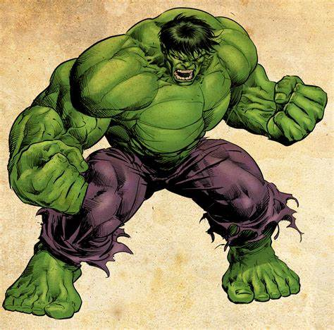

COMICS DEL MUNDO Y SU AUTOR
ELIGE UNA OPCIÓN DEBAJO

Marvel Comics nació en 1939 como una editorial de cómics de superhéroes fundada por Martin Goodman,
que entonces tenía 31 años. En un primer momento, se trataba de un proyecto secundario del emprendedor,
que ya tenía otra editorial especializada en novelas ambientadas en el oeste americano.